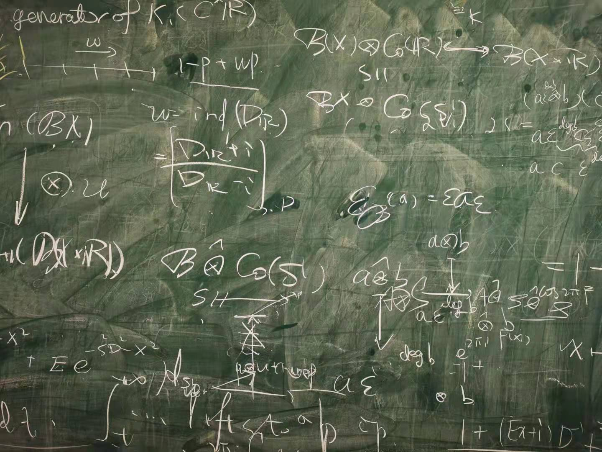

Li Lai (赖力)
Fudan University
Shanghai, China
lilaimath[AT]gmail[DOT]com
About me
I am currently a research assistant at School of Mathematical Sciences in Fudan University.
I am interested in transcendental number theory and wave equation. Recently I worked
on irrationality of odd zeta values.
Papers
- A note on the number of irrational odd zeta values (with Pin Yu) Compos. Math. 156 (2020), no. 8, 1699-1717.
Preprints
- At least two of ζ(5), ζ(7), ..., ζ(35) are irrational
(with Li Zhou) (2021)
- On the rigidity of stationary charged black holes: small perturbations of the non-extremal Kerr-Newman family
(with Jiong-Yue Li, Pin Yu) (2019)
Useful links
Zeta values on the Web (Compiled by Wadim Zudilin)